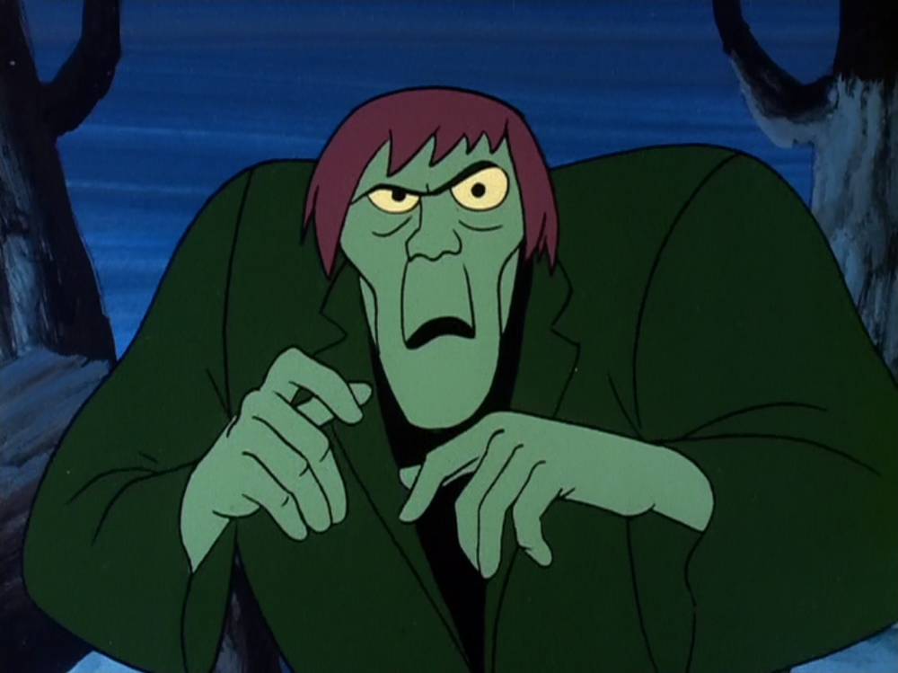

1971 - The Creeper System
Bob ThomasThe Creeper system is commonly considered to be the first computer virus, though this was not the initial intention behind it. It was created in 1971 by the programmer Bob Thomas, an employee at the research & development company Bolt Beranek and Newman Inc. He was hired to design RSEXEC, a resource-sharing capability which would allow programs to move from one computer to another. The plan was to distribute work over different computers so that computers that had nothing to do could minimize the workload of a computer currently in use. As an experiment to make sure this would be possible, Thomas created the Creeper, a simple program that went from one computer to another and ran on every computer it found. The program was named after the Scooby-Doo villain The Creeper . |
 |
|---|---|
| |
|
Ray Tomlinson
Ray Tomlinson, the creator of the email, was another employee at
BNN , who'd also had a hand in creating the Tenex operating
system. He made modifications to the Creeper program so that, on top
of moving from one computer to another, it would also leave a copy
of itself on every computer. Ray's idea was to allow applications to
stay on one machine while running an operation on another machine at
the same time.
|
|
Creeper1 |
Jarod Facineroso |
facinj@usi.ch
|
|---|